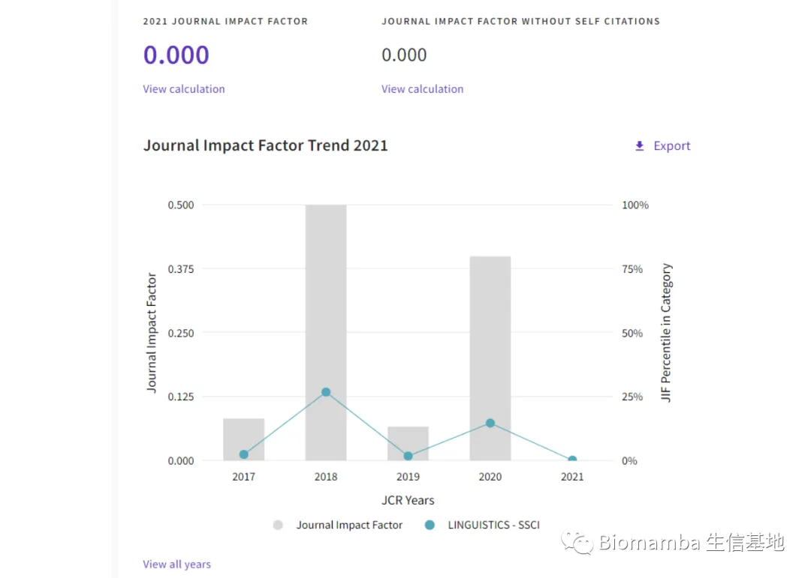
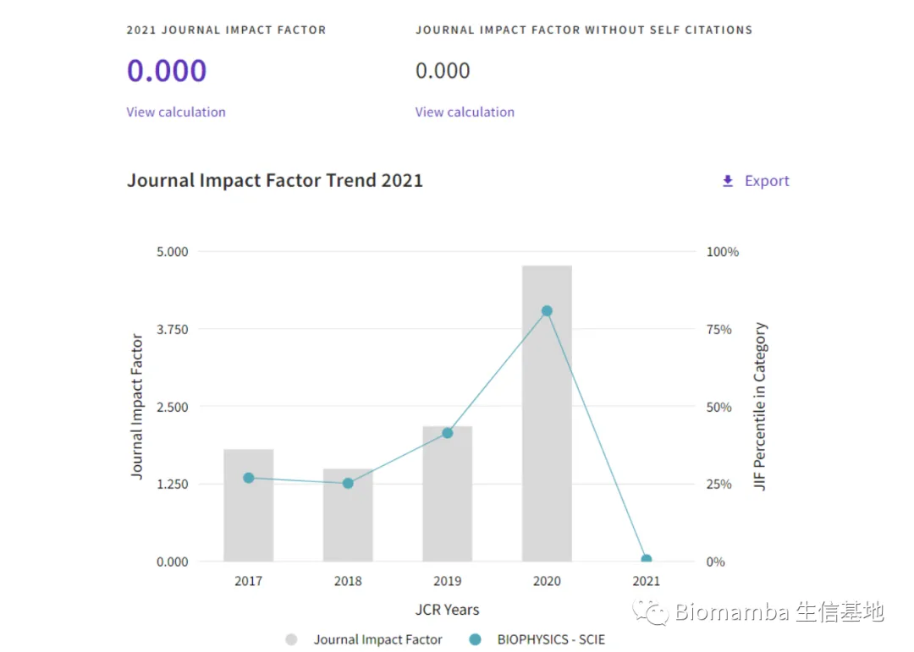
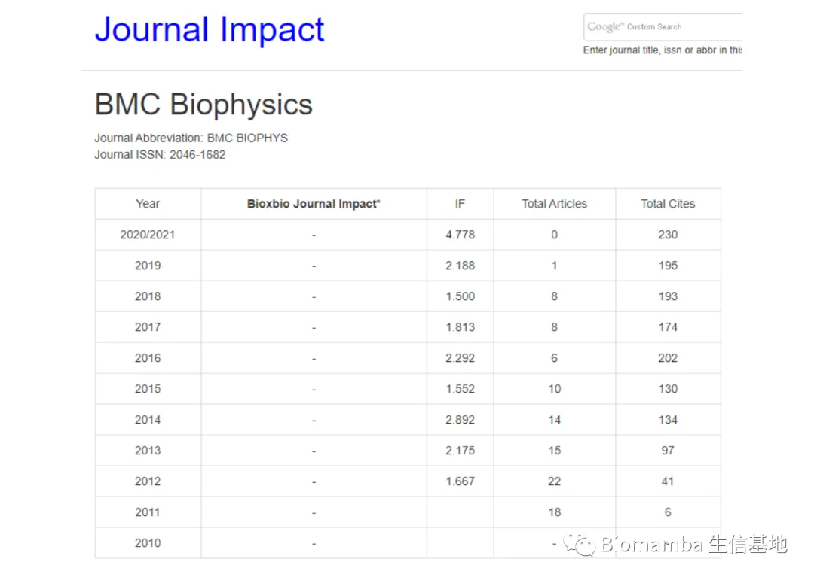
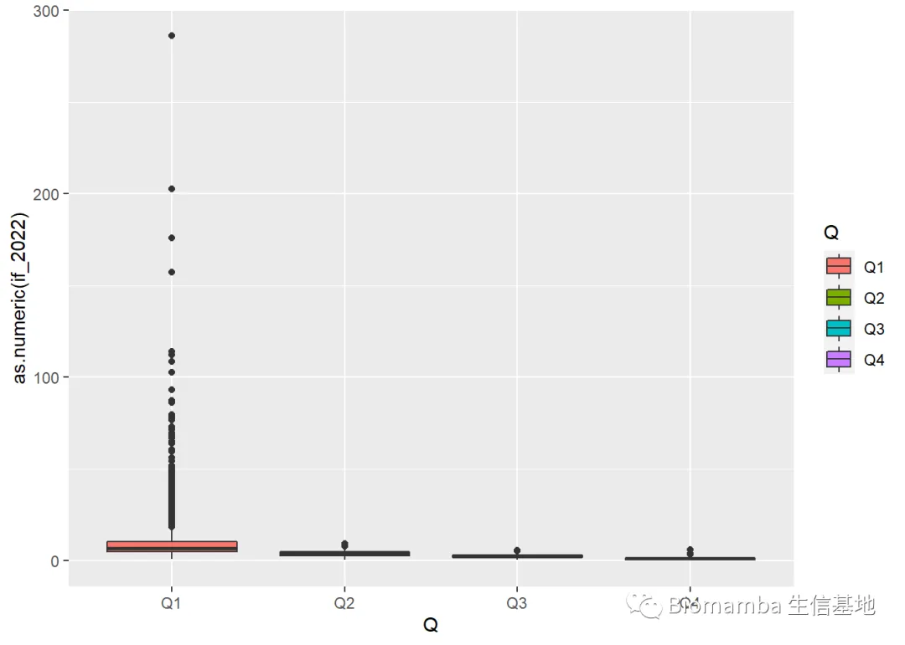
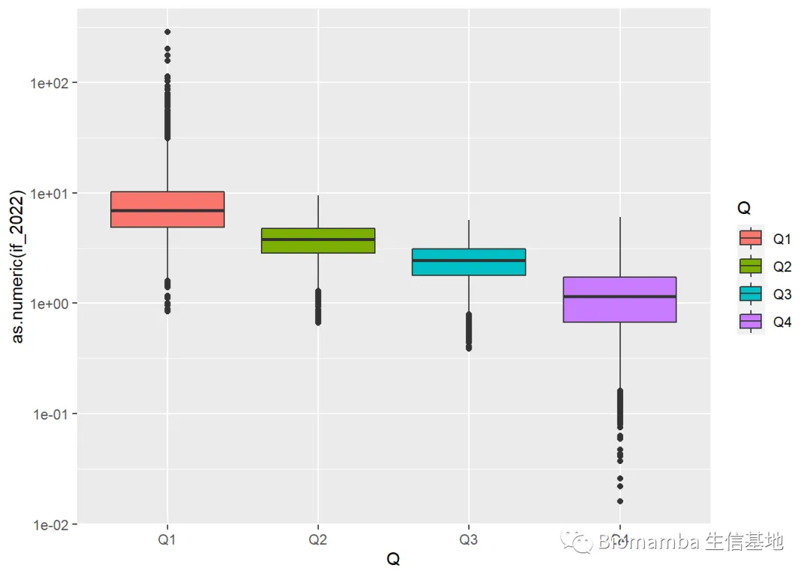

看了两万多篇期刊,居然有影响因子是0的?(文末附完整表格)
原文：https://mp.weixin.qq.com/s?__biz=MzAwMzIzOTk5OQ==&mid=2247488311&idx=1&sn=7267726ca19ed58705ff60e5d6b48021&chksm=9b3f6a67ac48e3710edc5bb2c37eac6884062f3126216cbb623273a74ec9884d31dff6f7009e#rd 合集：漫谈胡侃
昨儿发生了件大事，新一年的影响因子(Impact Factor, IF)公布了。IF是由 Clarivate 的Journal Citation Reports(也就是大家熟知的JCR: https://jcr.clarivate.com/jcr/home)发布的期刊评价指标，目前来说是衡量一个期刊质量的首要 可量化标准，其计算公式为该期刊第三年的被引用数/前两年的发文数。也就是说今年(2022)发布的2021影响因子=21年被引用数/(19年发文量+20年发文量)，基本上可以反应一个期刊三年内的热度。 而大家今年中的文章，评奖 、毕业 时参考的也就是昨天发布的这个数值，我这有张汇总的表格，我们来看看今年新鲜的影响因子都有哪些要素。
library(dplyr)
IF.2022.6 <- as.data.frame(readxl::read_xlsx('2022.xlsx'))
names(IF.2022.6)#看一下这个表包含了哪些信息
## [1] "journal_name" "issn" "eissn" "category"
## [5] "citations" "if_2022" "jci" "percentageOAGold"
IF.2022.6$if_2022 <- as.numeric(IF.2022.6$if_2022)
summary(IF.2022.6$if_2022)
## Min. 1st Qu. Median Mean 3rd Qu. Max. NA's
## 0.000 1.480 2.627 3.908 4.349 286.130 9006
所有期刊平均值是3.9、中位数是2.6，没达到这个标准的想想自己有没有在灌水。 最高的仍然是神刊CA ，虽然跟去年相比直接腰斩 ，但是基本也比第二名多出一个**《Nature》**(IF=69.50)：
IF.2022.6 %>% top_n(n=5,wt = as.numeric(if_2022)) %>% .[,c(1,6)]
## journal_name if_2022
## 1 CA-A CANCER JOURNAL FOR CLINICIANS 286.130
## 2 LANCET 202.731
## 3 NEW ENGLAND JOURNAL OF MEDICINE 176.079
## 4 JAMA-JOURNAL OF THE AMERICAN MEDICAL ASSOCIATION 157.335
## 5 NATURE REVIEWS MOLECULAR CELL BIOLOGY 113.915
更喜闻乐见的是，居然有几个期刊是零分 的，让我们来看看到底是哪几个倒霉蛋
IF.2022.6 %>% filter(as.numeric(if_2022)==0) %>% .[,1]
## [1] "Sintagma" "BMC Biophysics"
## [3] "WOCHENBLATT FUR PAPIERFABRIKATION" "LIBRARY AND INFORMATION SCIENCE"
## [5] "SECURITIES REGULATION LAW JOURNAL" "BELL LABS TECHNICAL JOURNAL"
我本以为是哪个新期刊 当了倒霉蛋，但是仔细思考一下新期刊应该是NA才最，检索一番(比如这个Sintagma)，发现这并不是个新刊，讲道理2018年之际影响因子还高达0.5 ，没想到今年跌了个底儿掉

而BMC Biophysics 在去年公布的2020年影响因子还是高达4.78 ，这就是一个很诡异的事情，仔细搜了一下，这个杂志发文一直较少，近两年直接就停刊了:那明年这文章影响因子不得无穷大？言归正传，这也提醒大家当年影响因子并不是选择杂志的最重要因素，杂志的发文量、前几年的影响因子稳定性同样需要重点观察。

这里发现一个查看文章发布量的好去处: https://academic-accelerator.com/Impact-of-Journal

最后再看看大家比较关心的分区
IF.2022.6$Q <- gsub('.*\\(','',IF.2022.6$category) %>% gsub(')','',.)
data4plot <- IF.2022.6 %>% filter(!Q=='N/A')for (i in unique(data4plot$Q)) {
data4plot[data4plot$Q==i,]$if_2022 %>% summary() %>% cbind(.,i) %>% print()
}
## . i
## Min. "0.848" "Q1"
## 1st Qu. "4.892" "Q1"
## Median "6.91" "Q1"
## Mean "9.88565281662006" "Q1"
## 3rd Qu. "10.271" "Q1"
## Max. "286.13" "Q1"
## NA's "1" "Q1"
## . i
## Min. "0" "Q4"
## 1st Qu. "0.672" "Q4"
## Median "1.154" "Q4"
## Mean "1.2530096884001" "Q4"
## 3rd Qu. "1.733" "Q4"
## Max. "6.06" "Q4"
## NA's "1" "Q4"
## . i
## Min. "0.386" "Q3"
## 1st Qu. "1.797" "Q3"
## Median "2.4365" "Q3"
## Mean "2.45466925948973" "Q3"
## 3rd Qu. "3.101" "Q3"
## Max. "5.655" "Q3"
## . i
## Min. "0.661" "Q2"
## 1st Qu. "2.83775" "Q2"
## Median "3.8125" "Q2"
## Mean "3.85662638504155" "Q2"
## 3rd Qu. "4.7885" "Q2"
## Max. "9.473" "Q2"
粗略已经能看出来差异了，Q1的平均IF为9.89，Q2为3.86，差距还是比较悬殊的，画个图看看吧：
library(ggplot2)
ggplot(data4plot, aes(x=Q, y=as.numeric(if_2022),fill=Q))+
geom_boxplot()

看来一区里的几个突出代表毁了咱们这张图，做截断也不合适，那就取个log吧
ggplot(na.omit(data4plot), aes(x=Q, y=as.numeric(if_2022),fill=Q))+
geom_boxplot() +scale_y_continuous(trans = "log10")

可以看出分区基本就代表了影响因子的差距
完整表格可以通过以下链接或者点击阅读原文获取：
https://pan.baidu.com/s/1ubcGVN0tJ8Zod3dKTisIWA?pwd=0gyf
如何联系我们
公众号后台中消息更新不及时，超过48h后便不允许回复读者消息，这里给大家留一下领取资料、咨询服务器的微信号 ，方便大家随时交流、提建议（由助理接待）。此外，呼声一直很高的交流群也建好了，欢迎大家入群讨论：你们要的微信、交流群，来了！大家可以阅读完这几篇之后添加笑一笑也就算了有关提高"Biomamba 生信基地"运行效率事宜